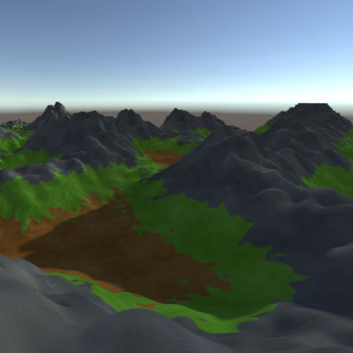
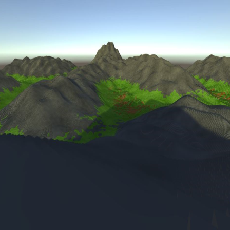
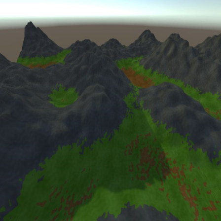

My MSc project centered around level of detail (LOD) systems in computer graphics. I proposed a novel method that leverages human perception to optimize detail allocation — using the geometrical properties of an octree when projected on screen to dynamically determine LOD transition distances at minimal cost to performance.
To evaluate my method, I implemented a procedural terrain generator in Unity. Octree data structures are well suited for volumetric data as they can greatly compress its memory footprint. The generator featured a wide array of configurable parameters, and terrain was chosen as the evaluation domain due to the strong correlation between LOD systems and virtual terrains.
The terrain is rendered as a mesh, enabling it to leverage Unity's built-in post-processing and lighting systems. The mesh is culled and optimized to only include faces adjacent to air and facing upward, significantly reducing its memory footprint.
This project taught me a great deal about working with Unity Jobs alongside the Unity Burst compiler to achieve high performance. I also gained broader research experience in procedural terrain generation, procedural meshing, and designing performant algorithms.



I am looking to clean up my repository for this project and open source it in the near future. When I do, it will be available on my github.